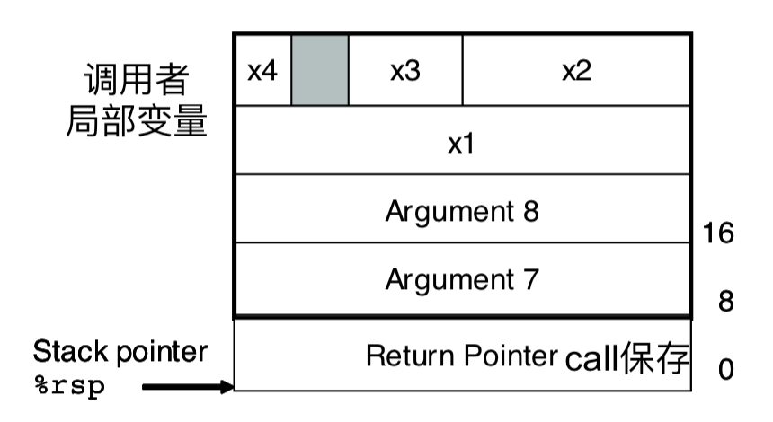

public: True class: center, middle # x86-64选讲 蒋炎岩 <jyy@nju.edu.cn> 南京大学计算机软件研究所 --- class: center, middle # x86-64寄存器和运算 --- # x86-64寄存器：多了很多 | 用途 | 64b | 低32b | 低16b | 低8b | 8-15b | | ---------------- | ---- | ----- | ----- | ----- | ------ | | 返回值 | %rax | %eax | %ax | %al | %ah | | .red[调用者保存] | %rbx | %ebx | %bx | %bl | %bh | | 参数4 | %rcx | %ecx | %cx | %cl | %ch | | 参数3 | %rdx | %edx | %dx | %dl | %dh | | 参数2 | %rsi | %esi | %si | %sil | | | 参数1 | %rdi | %edi | %di | %dil | | | .red[调用者保存] | %rbp | %ebp | %bp | %bpl | | | 栈顶 | %rsp | %esp | %sp | %spl | | | 参数5 | %r8 | %r8d | %r8w | %r8b | | | 参数6 | %r9 | %r9d | %r9w | %r9b | | | .red[调用者保存] | %r10 | %r10d | %r10w | %r10b | | | 链接 | %r11 | %r11d | %r11w | %r11b | | | C unsued | %r12 | %r12d | %r12w | %r12b | | | .red[调用者保存] | %r13 | %r13d | %r13w | %r13b | | | .red[调用者保存] | %r14 | %r14d | %r14w | %r14b | | | .red[调用者保存] | %r15 | %r15d | %r15w | %r15b | (没有) | --- # 例子：A+B Problem ```c int f(int a, int b) { return a + b; } ``` 试着写出32/64bit汇编代码 -- count: false ---- 32bit: ``` mov 0x8(%esp),%eax add 0x4(%esp),%eax ret ``` 64bit: ``` lea (%rdi,%rsi,1),%eax retq ``` --- # 例子：multimod (Lab1) 作弊手段： ```c uint64_t multimod(uint64_t a, uint64_t b, uint64_t m) { return (__uint128_t)a * b % m; } ``` 代码： ``` mov %rdi,%rax mov %rdx,%rcx push %rbp mul %rsi mov %rdx,%rsi mov %rax,%rdi mov %rcx,%rdx xor %ecx,%ecx callq __umodti3 pop %rbp retq ``` --- # 例子：max (条件移动指令) ```c int max(int a, int b) { return (a > b) ? a : b; } ``` 64bit: ``` cmp %edi,%esi mov %edi,%eax cmovge %esi,%eax retq ``` 32bit (`-march=i386`): ``` mov 0x8(%esp),%eax cmp 0x4(%esp),%eax jge e <max+0xe> mov 0x4(%esp),%eax ret ``` --- # 例子：循环 ```c int fact(int n) { int res = 1; do { res *= n; n--; } while (n > 0); return res; } ``` ---- ``` mov $0x1,%eax nopl (%rax) .L1: imul %edi,%eax sub $0x1,%edi test %edi,%edi jg .L1 repz retq ``` 两个诡异代码： * `nopl (%rax)`：内存对齐(padding) * `repz retq`：防止连续分支指令 --- class: center, middle # x86-64函数调用 --- # 最简单的printf ```c void plus(int a, int b) { printf("%d + %d = %d\n", a, b, a + b); } ``` 调用的其实不是printf，而是__printf_chk (RTFM, STFW) ---- 编译出了什么玩意啊这是： ``` lea (%rdi,%rsi,1),%r8d mov %edi,%edx mov %esi,%ecx mov $0x1,%edi mov $0x4007b4,%esi xor %eax,%eax jmpq 400530 <__printf_chk@plt> nopl 0x0(%rax) ``` --- # 对比32位的printf 好读，冗长，浪费了很多计算资源 * push/pop将参数保存到%esp+xx的内存中 * 但读起来的确容易那么一些 ``` sub $0x18,%esp mov 0x1c(%esp),%eax mov 0x20(%esp),%edx lea (%eax,%edx,1),%ecx push %ecx push %edx push %eax push $0x8048640 push $0x1 call 80483e0 <__printf_chk@plt> add $0x2c,%esp ret ``` --- # x86-64：一种RISC架构 `void swap(int *x, int *y);`交换两个指针指向的数字 ```assembly mov 0x8(%esp),%edx mov 0xc(%esp),%eax mov (%edx),%ecx mov (%eax),%ebx mov %ebx,(%edx) mov %ecx,(%eax) pop %ebx ret ``` ```assembly mov (%rdi),%eax mov (%rsi),%edx mov %edx,(%rdi) mov %eax,(%rsi) retq ``` --- # 函数调用栈 .float-right[] `call target`指令在x86和x86-64上的行为是类似的： 1. `push next-IP` 2. `jmp target` ---- 但%ebp是通用寄存器，不再作为frame pointer (局部变量用%rsp寻址) * 如果需要建立stack frame，则直接使用`sub $32, %rsp`实现 * 刚才看到的函数(即便是打印a + b)，都没有新建stack frame --- # 函数调用栈 (cont'd) 习题：如下代码会发生什么？(x86会生成怎样的代码？) ```c void f(int a) { do_sth(&a); } ``` -- count: false ---- 当定义局部变量、取参数地址、参数传递等情况发生时，会将相应数值存放到stack frame中 ``` sub $0x18,%rsp mov %edi,0xc(%rsp) lea 0xc(%rsp),%rdi callq do_sth add $0x18,%rsp retq ``` --- # 函数调用栈 (cont'd) 递归(<math>f(n) = f(n-1) + f(n-2)</math>) ``` fib: test %edi,%edi jle .L1 push %rbp push %rbx mov %edi,%ebx lea -0x1(%rdi),%edi; xor %eax,%eax; sub $0x8,%rsp callq fib lea -0x2(%rbx),%edi; mov %eax,%ebp; xor %eax,%eax callq fib add $0x8,%rsp add %ebp,%eax pop %rbx pop %rbp retq nopl 0x0(%rax,%rax,1) .L1: mov $0x1,%eax retq ``` --- # 浮点数 现在都是用SSE里的%xmm寄存器了(不再是stack-based x87)，使代码更难读了…… 浮点数版的阶乘(.red[什么鬼]) ``` movsd 0xb8(%rip),%xmm0 # 此处有黑人❓ nopl 0x0(%rax,%rax,1) .L1: pxor %xmm1,%xmm1 cvtsi2sd %edi,%xmm1 sub $0x1,%edi test %edi,%edi mulsd %xmm1,%xmm0 jg .L1 repz retq ``` --- class: center, middle # 小结 --- # RTFM, STFW 现在你理解了为什么说C语言是高级汇编了吧 * 看着C代码，你能大概*猜到*指令在机器级的行为 ---- 再次推荐必读材料：[x86-64 Machine-Level Programming](/static/wiki/ics/asm64-handout.pdf)